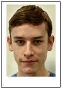

Ik en Lander zatten in het kleine winkeltje Pentecom. Onze baas Olaseni Olugbola was een zeer vriendelijk en hulpvolle meneer. Pentecom is een winkel waar je opladers, koptelefonen, kabels ... kan kopen het is ook een soort internetcafé waar je kan afprinten of gewoon op internet kan surfen.
Jasper Dewispelaere
E-Mail: jasperdewispelaere@gmail.com | Phone: +3292534094
| Mobile: +32491084792
PERSONAL PROFILE I'm a 17 year old young man with a
passion for IT and gaming. I'm looking for a placement in a British IT company.
I'm a student at the secondary school 'De Tandem' Atheneum in Eeklo, Belgium. I'm currently in my last year Informaticabeheer and I have passion for coding and
web-design. I hope this placement will improve my coding skills, as well as
gaining work experience. I am thrilled to get the opportunity to do this
placement in England, a good chance to improve my English and to learn a new
culture.
WORK
EXPERIENCE Babysitting
September 2016-present
Bartending
March - April 2016
EDUCATION Informaticabeheer
(IT management)
Atheneum De Tandem, Eeklo,
Belgium
September 16-present
·
Web
Design (HTML, CSS)
·
Programming
(JAVA)
·
Networking
(IP)
·
Hardware
Maintenance
·
Database(SQL)
·
Troubleshooting
·
Software Testing
·
Software Development
SKILLS ° Proficient
in Microsoft Office (Word, Powerpoint, Excel and
Access)
°
Good use of Windows, Android and IOS
°
Familiar with Paint and GIMP
°
Familiar with Software Testing and Software Development
LANGUAGES Dutch: Native speaker
English:
Intermediate
French:
Intermediate
INTERESTS Gaming, web design,
films/series, programming
Jasper Dewispelaere EEKLO, 3/10/2017
Moerbeistraat 5
9940 EVERGEM
Tel. 0491084792
E-mail: jasperdewispelaere@gmail.com
GO! Atheneum Zelzate
T.a.v. Filip Bisschop en Nina Heesakeers
Onteigeningsstraat 41 b
9060 ZELZATE
Tel. 003293455610
E-mail: erasmus@go-zelzate.be
www.go-zelzate.be
Geachte mevrouw Heesakkers en meneer Bisschop
Ik zit momenteel in het 6de jaar informaticabeheer op het GO! Atheneum De Tandem. Ik zou graag willen verder studeren in de richting informatica.
Ik ben heel geïnteresseerd om op stage te gaan omdat het mij leuk en leerrijk lijkt om eens een week mee te draaien in een echt informaticabedrijf. Ik krijg de kans om dit te doen en zou het leuk vinden om dit mee te maken. Ik zou willen weten komen hoe een normale werkdag in een informaticabedrijf verloopt. Ik weet van de 6des van vorige jaar dat dit een leerrijke ervaring is.
Ik heb momenteel nog geen activiteiten ondernomen. Ik ben goed in het programmeren van programma’s maar webpagina’s maken vind ik ook leuk om te doen en kan ik ook goed. Een computer repareren doe ik minder graag want ik ben niet de handigste persoon.
Kortom dit is een zeer leerrijke en spannende ervaring en ik hoop dat ik veel zal bijleren.
Met vriendelijke groeten
Jasper Dewispelaere
Zelzate,
2017-09-19
Intentieverklaring stage “Let’s get bizzy:
London calling”
Geachte ouder
Beste leerling van 6 BI / INFB
Stage in het buitenland!? Een fantastisch idee! Je leert er enorm van bij op persoonlijk vlak, op vlak van zelfstandigheid, je talenkennis gaat erop vooruit, je leert leven en werken in een internationale en interculturele omgeving, het verruimt je blik op de wereld, het zet je opleiding in een internationaal licht, het is een voorbereiding op een mogelijke internationaal getinte studieloopbaan/carrière, … Een internationale ervaring tijdens je opleiding is zonder twijfel een extra troef op je CV als je straks begint te studeren/solliciteren!
Met dit digitaal formulier dien je kenbaar te maken dat je dit schooljaar 2 weken stage wenst te lopen in Londen.
Vul dit formulier volledig in en voeg een motivatiebrief bij.
PERSOONLIJKE GEGEVENS
Officiële voornaam: Jasper
Officiële naam: Dewispelaere
Geboortedatum: 26/11/2000
Geboorteplaats: Gent
Rijksregisternummer: 00.11.26-075.27
Nationaliteit: Belg
Campus: GO! Atheneum en leefschool de tandem
Opleiding: Informaticabeheer
Opleidingsjaar: 6de jaar
Correspondentieadres: Moerbeistraat 5 9940 Evergem
Persoonlijk e-mailadres: jasperdewispelaere@gmail.com
Persoonlijk gsm-nummer: 0491084792
VÓÓR 30 SEPTEMBER 2017 MAIL JE DEZE INTENTIEVERKLARING
NAAR:
Bij toewijzing van deze beurs ontvangt de school voor alle kosten een
subsidie van € 1 356 van Erasmus+.
(€ 180 voor reiskosten en € 1 176 voor verblijfskosten). Uit ervaring weten wij
dat dit de stage niet volledig dekt, maar de bijkomende kosten neemt de school
op zich.
Inbegrepen in deze stage:
- Mobiliteit (Brussel Zuid – Londen / Londen – Brussel Zuid)
- Groepstransfer (Londen – ADC / ADC – Londen)
- Verblijf in een gastgezin met ontbijt en avondmaal
- Stagebedrijf
- Mentoring van ADC en leerkrachten
- 24u noodnummer ADC
- Oystercard
- Cambridge English Test
- Verzekering: Studentguard+
- Europass CV
Niet inbegrepen:
- Middagmaal
- Persoonlijke uitgaven
Indien u zoon of dochter de stage vroegtijdig beëindigt zullen de kosten van vroegtijdig vertrek op de ouders of meerderjarige student verhaald worden.
Tijdens het schooljaar 2017-2018 zal er in het kader van de buitenlandse stage naar Londen, een Erasmus+-project, een uiteenzetting gegeven op De Tandem in Eeklo. De leerlingen en ouders van de doelgroep van het Koninklijk Atheneum Zelzate, het Koninklijk Atheneum Maldegem en De Tandem zullen uitgenodigd worden voor deze infoavond. Zo leren de verschillende ouders elkaar kennen, leren de ouders en leerlingen de drie begeleidende leerkrachten kennen en is het ook een blij weerzien voor de leerlingen na hun gezamenlijke uitstap in het voorjaar 2018.
Met vriendelijke groeten
dhr. Hamerlinck, voor leerlingen van KA Maldegem
dhr. Lippens, voor leerlingen van De Tandem
mevr. Heesakkers en dhr. Bisschop, voor leerlingen van KA Zelzate
Directeur Directeur Directeur
Maldegem Eeklo Zelzate
G. De
Buysere N.
Van Vooren A.
Van Parys